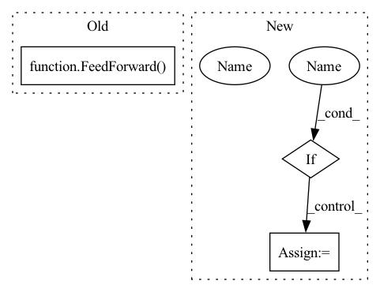

Pattern ID :41178

Before Change
for ind, local_heads in zip(range(depth), n_local_attn_heads):
attn = SelfAttention(dim, depth, max_seq_len, heads, local_heads, window_size, causal = causal, local_attn_window_size = local_attn_window_size, attn_dropout = attn_dropout, dropout = attn_layer_dropout, kmeans_ema_decay = kmeans_ema_decay, commitment_factor = commitment_factor)
ff = Chunk(ff_chunks, FeedForward(dim, dropout = ff_dropout, glu = ff_glu), along_dim=1)
attn, ff = map(fn_wrapper, (attn, ff))
layers.append(nn.ModuleList([attn, ff]))
After Change
get_context_attn = lambda: SelfAttention(dim, depth, max_seq_len, heads, 0, window_size, local_attn_window_size = local_attn_window_size, attn_dropout = attn_dropout, dropout = attn_layer_dropout, kmeans_ema_decay = kmeans_ema_decay, commitment_factor = commitment_factor, receives_context = True, context_window_size = context_window_size)
get_context_ff = lambda: Chunk(ff_chunks, FeedForward(dim, dropout = ff_dropout, glu = ff_glu), along_dim=1)
if weight_tie:
assert len(set(n_local_attn_heads)) == 1, "you can only weight tie if number of local attention heads for all layers is the same"
get_attn, get_ff, get_context_attn, get_context_ff = map(cache_fn, (get_attn, get_ff, get_context_attn, get_context_ff))
for ind, local_heads in zip(range(depth), n_local_attn_heads):
attn = get_attn(local_heads)
In pattern: SUPERPATTERN
Frequency: 3
Non-data size: 3
Instances
Fragment ID: 116172636
Project Name: lucidrains/routing-transformer
Commit Name: 899fbf85db9b5f734283552132c7b77265f64d2f
Time: 2020-05-27
Author: lucidrains@gmail.com
File Name: routing_transformer/routing_transformer.py
M Class Name: RoutingTransformer
N Class Name: RoutingTransformer
M Method Name: __init__(21)
N Method Name: __init__(20)
M Parent Class: nn.Module
N Parent Class: nn.Module
M File Name: routing_transformer/routing_transformer.py
N File Name: routing_transformer/routing_transformer.py
M Start Line: 588
M End Line: 599
N Start Line: 591
N End Line: 623
'>
Before Change
PreNorm(latent_dim, Attention(latent_dim, input_dim, dropout = attn_dropout), context_dim = input_dim),
PreNorm(latent_dim, FeedForward(latent_dim, dropout = ff_dropout)),
PreNorm(latent_dim, Attention(latent_dim, dropout = attn_dropout)),
PreNorm(latent_dim, FeedForward(latent_dim, dropout = ff_dropout))
]))
self.to_logits = nn.Linear(latent_dim, num_classes)
After Change
get_latent_attn = lambda: PreNorm(latent_dim, Attention(latent_dim, dropout = attn_dropout))
get_latent_ff = lambda: PreNorm(latent_dim, FeedForward(latent_dim, dropout = ff_dropout))
if weight_tie_layers:
get_cross_attn, get_cross_ff, get_latent_attn, get_latent_ff = map(cache_fn, (get_cross_attn, get_cross_ff, get_latent_attn, get_latent_ff))
self.layers = nn.ModuleList([])
for _ in range(depth):
'>
Fragment ID: 116172638
Project Name: lucidrains/perceiver-pytorch
Commit Name: f0455b6ff59331de8151bf659b62ddf97ac802bd
Time: 2021-03-04
Author: lucidrains@gmail.com
File Name: perceiver_pytorch/perceiver_pytorch.py
M Class Name: Perceiver
N Class Name: Perceiver
M Method Name: __init__(1)
N Method Name: __init__(1)
M Parent Class: nn.Module
N Parent Class: nn.Module
M File Name: perceiver_pytorch/perceiver_pytorch.py
N File Name: perceiver_pytorch/perceiver_pytorch.py
M Start Line: 115
M End Line: 120
N Start Line: 127
N End Line: 142
'>
Before Change
blocks = []
for _ in range(depth):
attn = LSHSelfAttention(emb, heads, bucket_size, n_hashes, causal = causal)
ff_net = FeedForward(emb)
f = WithLayerNorm(emb, attn)
g = Chunk(ff_chunks, WithLayerNorm(emb, ff_net), along_dim = -2)
blocks.append(ReversibleBlock(f, g, split_along_dim=-1))
After Change
get_attn = lambda: LSHSelfAttention(emb, heads, bucket_size, n_hashes, causal = causal)
get_ff = lambda: FeedForward(emb)
if weight_tie:
get_attn = cache_fn(get_attn)
get_ff = cache_fn(get_ff)
blocks = []
'>
Fragment ID: 116172634
Project Name: lucidrains/reformer-pytorch
Commit Name: f83b19cd7b4c7dc0179b5b4fd86103c619420662
Time: 2020-01-10
Author: lucidrains@gmail.com
File Name: reformer.py
M Class Name: Reformer
N Class Name: Reformer
M Method Name: __init__(11)
N Method Name: __init__(10)
M Parent Class: nn.Module
N Parent Class: nn.Module
M File Name: reformer.py
N File Name: reformer.py
M Start Line: 309
M End Line: 310
N Start Line: 310
N End Line: 328